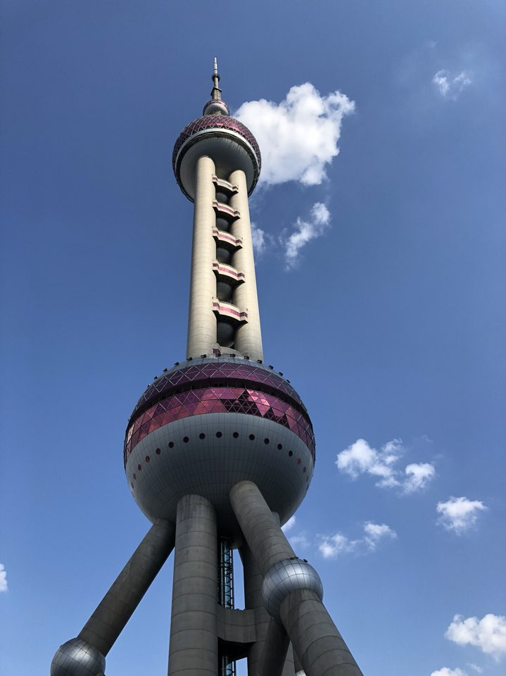

<!DOCTYPE html>
<html lang="en">
<head>
    <meta http-equiv="Content-Type" content="text/html; charset=utf-8" />
    <meta name="viewport" content="initial-scale=1.0, user-scalable=no" />
    <style type="text/css">
        body, html{width: 100%;height: 100%; margin:0;font-family:"微软雅黑";}
        #l-map{height:100%;width:80%;}
        #r-result {
            margin: 0;
            padding: 0;
            z-index: 999;
            position: absolute;
            background-color: white;
            max-height: 100%;
            overflow-y: auto;
            top: 0;
            right: 0;
            width: 20%;
        }
        dl,dt,dd,ul,li{
            margin:0;
            padding:0;
            list-style:none;
        }
        dt{
            font-size:14px;
            font-family:"微软雅黑";
            font-weight:bold;
            border-bottom:1px dotted #000;
            padding:5px 0 5px 5px;
            margin:5px 0;
        }
        dd{
            padding:5px 0 0 5px;
        }
        li{
            line-height:28px;
        }
    </style>
    <script type="text/javascript" src="jquery-1.10.2.js"></script>
    <script type="text/javascript" src="http://api.map.baidu.com/api?v=2.0&ak=n3xc9ALenVeuL9apmqs4ZjrluhhsX4mr"></script>
    <script type="text/javascript" src="http://api.map.baidu.com/library/SearchInfoWindow/1.5/src/SearchInfoWindow_min.js" charset="UTF-8"></script>
    <link rel="stylesheet" href="http://api.map.baidu.com/library/SearchInfoWindow/1.5/src/SearchInfoWindow_min.css" />
    <title>信息窗测试</title>
</head>
<body>
<div id="l-map"></div>
<div id="r-result"></div>
</body>
</html>
<script type="text/javascript">
    var map = new BMap.Map("l-map");            // 创建Map实例
    var _point = new BMap.Point(120.76387299284131, 31.92252143886308);
    var point1=new BMap.Point(121.506377,31.245105);
    map.centerAndZoom(_point, 9);
    map.enableScrollWheelZoom(true);
    // var content = '<div style="margin:0;line-height:20px;padding:2px;">' +
    //     ''
    //     +''
    //     +''
    //     +''
    //     +'地址：上海市浦东新区世纪大道1号<br/>电话：(021)58791888<br/>简介：东方明珠广播电视塔是上海的标志性文</br>化景观之一。</br>' +
    //      '视频链接:'+'&nbsp;&nbsp;'+'<a href="#" onclick="getHref()">视频1</a>'+'&nbsp;&nbsp;'+'<a href="#" onclick="getHref1()">视频2</a>'+'&nbsp;&nbsp;'+'<a href="#" onclick="getHref2()">视频3</a>'+
    //     '</div>';
    var content = '<br style="margin:0;line-height:10px;padding:2px;">' +
        '地址：上海市浦东新区世纪大道1号<br/>电话：(021)58791888<br/>简介：东方明珠广播电视塔是上海的标志性文</br>化景观之一。</br>' +
        '图片:'+''+
        ''+
        ''+
        '</br>'+
        '视频链接:'+'&nbsp;&nbsp;'+'<a href="#" onclick="getHref()">视频1</a>'+'&nbsp;&nbsp;'+'<a href="#" onclick="getHref1()">视频2</a>'+'&nbsp;&nbsp;'+'<a href="#" onclick="getHref2()">视频3</a>'+
        '</div>';
    var searchInfoWindow = null;
    searchInfoWindow = new BMapLib.SearchInfoWindow(map, content, {
        title  : "东方明珠",
        width  : 250,
        height : 150,
        panel  : "panel",
        enableAutoPan : true,
        searchTypes   :[
            BMAPLIB_TAB_SEARCH,
            BMAPLIB_TAB_TO_HERE,
            BMAPLIB_TAB_FROM_HERE
        ]
    });
    var marker=new BMap.Marker(point1);
    marker.enableDragging(); //marker可拖拽
    marker.addEventListener("click", function(e){
        searchInfoWindow.open(marker);
    })
    map.addOverlay(marker);
    function getHref(){
        window.open("http://gslb.miaopai.com/stream/Ml-1gIUtUyiK0aRSTR2Evy263RdYsupFOaA-jQ__.mp4?yx=&refer=weibo_app&vend=weibo&label=mp4_hd&mpflag=8&KID=unistore,video&Expires=1552919153&ssig=5mOTil0OiS&KID=unistore,video");
    }
    function getHref1(){
        window.open("https://www.vjshi.com/watch/1856923.html");
    }
    function getHref2(){
        window.open("https://www.iqiyi.com/w_19s1ubt9it.html");
    }


    //	获取url参数
    // function getQueryString(name) {
    //     var result = location.search.match(new RegExp("[\?\&]" + name + "=([^\&]+)", "i"));
    //     if (result == null || result.length < 1) {
    //         return "";
    //     }
    //     return result[1];
    // }

//     $.ajax({
//         url: 'testShpService1.action',
//         type: 'get',
//         dataType: 'json',
//         success: function (shp_data) {
//             var shape = shp_data['shape'];
//             var lineArr = JSON.parse(shape);
//             var pointArr = [];
//             for(var i = 0; i < lineArr.length; i++) {
//                 var [_x, _y] = lineArr[i];
//                 var bp = new BMap.Point(_x, _y);
//                 pointArr.push(bp);
//             }
//             var polygon = new BMap.Polygon(pointArr);
//
//             //	百度地图API功能
//             var map = new BMap.Map("l-map");            // 创建Map实例
//             var _point = new BMap.Point(120.76387299284131, 31.92252143886308);
//             map.centerAndZoom(_point, 9);
//             map.enableScrollWheelZoom(true);
//
// //		map.centerAndZoom(new BMap.Point(midx, midy), 11);
//
//             map.addOverlay(polygon);
//         },
//         error: function (err_data) {
//         }
//     });

</script>